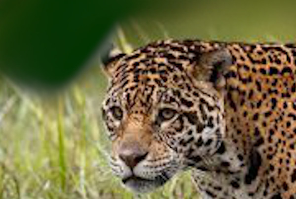
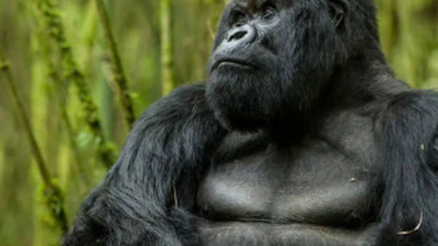
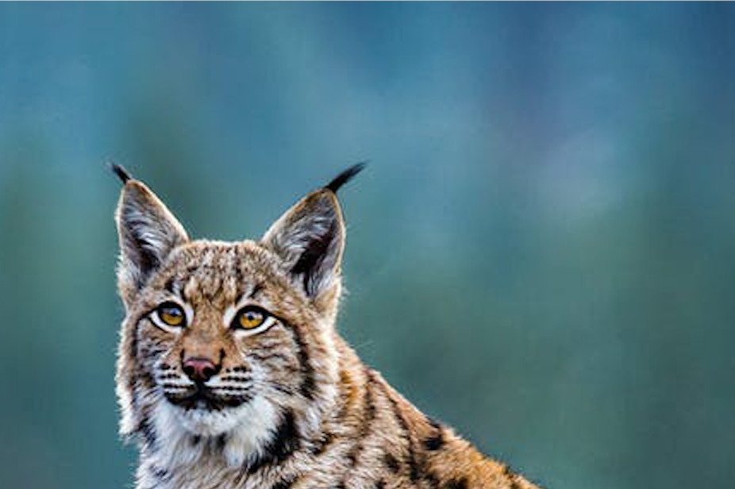
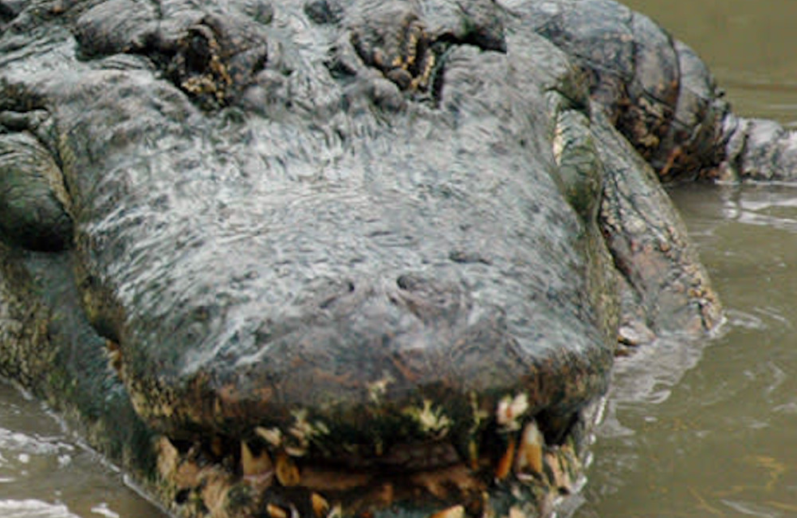
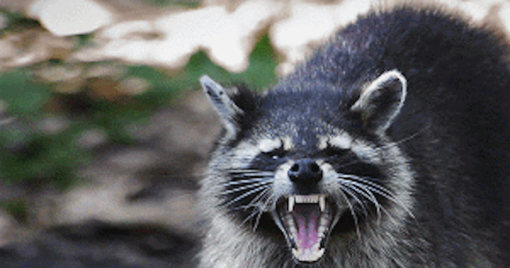

Jaguar, The unicorn of the jungle.
From Wikipedia, the free encyclopedia

The jaguar (Panthera onca) is a large felid species and the only extant member of the genus Panthera native to the Americas. The jaguar's present range extends from the southwestern United States and Mexico in North America, across much of Central America, and south to Paraguay and northern Argentina in South America. Though there are single cats now living within Arizona, the species has largely been extirpated from the United States since the early 20th century. It is listed as Near Threatened on the IUCN Red List; and its numbers are declining. Threats include loss and fragmentation of habitat.
Read More
Gorilla, The beast of the wild.
From Wikipedia, the free encyclopedia

Gorillas are ground-dwelling, predominantly herbivorous apes that inhabit the forest of central Sub-Saharan Africa. The genus Gorilla is divided into two species: the eastern gorillas and the western gorillas (both critically endangered), and either four or five subspecies. They are the largest living primates. The DNA of gorillas is highly similar to that of humans, from 95 to 99% depending on what is included, and they are the next closest living relatives to humans after the chimpanzees and bonobos.
Lets read more about these royal animals
Tiger
From Wikipedia, the free encyclopedia
The tiger (Panthera tigris) is the largest extant cat species and a member of the genus Panthera. It is most recognisable for its dark vertical stripes on orange-brown fur with a lighter underside. It is an apex predator, primarily preying on ungulates such as deer and wild boar. It is territorial and generally a solitary but social predator, requiring large contiguous areas of habitat, which support its requirements for prey and rearing of its offspring. Tiger cubs stay with their mother for about two years, before they become independent and leave their mother's home range to establish their own.
Read More...
Eurasian Lynx, The Canadian king
From Wikipedia, the free encyclopedia

Of the four lynx species, the Eurasian lynx (Lynx lynx) is the largest in size. It is native to European, Central Asian, and Siberian forests. While its conservation status has been classified as "least concern", populations of Eurasian lynx have been reduced or extirpated from Europe, where it is now being reintroduced.
The Eurasian lynx is the third largest predator in Europe after the brown bear and the grey wolf. It is a strict carnivore, consuming about one or two kilograms of meat every day. The Eurasian lynx is one of the widest-ranging.
Read More about the Lynx
Alligator
From Wikipedia, the free encyclopedia

The moose (North America) or elk (Eurasia), Alces alces, is a member of the New World deer subfamily and is the largest and heaviest extant species in the deer family. Most adult male moose have distinctive broad, palmate ("open-hand shaped") antlers; most other members of the deer family have antlers with a dendritic ("twig-like") configuration. Moose typically inhabit boreal forests and temperate broadleaf and mixed forests of the Northern Hemisphere in temperate to subarctic climates. Hunting and other human activities have caused a reduction in the size of the moose's range over time. It has been reintroduced to some of its former habitats. Currently, most moose occur in Canada, Alaska, New England (with Maine having the most of the lower 48 states), Fennoscandia, the Baltic states, and Russia. Its diet consists of both terrestrial and aquatic vegetation. The most common moose predators are the gray wolf along with bears and humans. Unlike most other deer species, moose do not form herds and are solitary animals, aside from calves who remain with their mother until the cow begins estrus (typically at 18 months after birth of the calf), at which point the cow chases away young bulls. Although generally slow-moving and sedentary, moose can become aggressive and move quickly if angered or startled. Their mating season in the autumn features energetic fights between males competing for a female.
Read More...
Racoon
From National Geographic

Bandit-masked raccoons are a familiar sight just about everywhere, because they will eat just about anything. These ubiquitous mammals are found in forests, marshes, prairies, and even in cities. They are adaptable and use their dexterous front paws and long fingers to find and feast on a wide variety of fare.
Read More